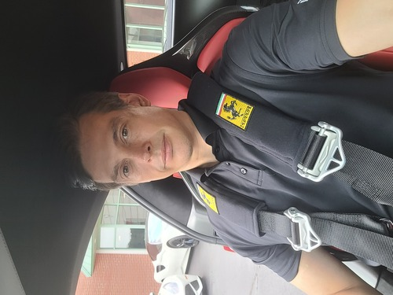

Eric Wortman
I am a passionate and experienced automotive professional with a unique background as both an automotive racing driver and sales manager. Leveraging extensive knowledge of automotive technologies, performance, and sales strategies, I excel in providing expert guidance and support to customers, driving product awareness, and achieving sales objectives. With a track record of success in high-pressure environments, I am committed to delivering exceptional customer experiences and exceeding expectations.
- Automotive Racing Expertise: Former automotive racing driver and instructor with a deep understanding of vehicle performance, handling, and technology. Able to translate racing insights into valuable product recommendations and customer engagement.
- Sales Management Experience: Proven track record as a sales manager in the automotive industry, with a focus on achieving sales targets, managing sales teams, and developing effective sales strategies.
- Product Knowledge: In-depth knowledge of automotive products, including specifications, features, and benefits. Capable of articulating complex technical information in a clear and understandable manner.
- Product Deliveries: Regulary work as the onsite point of contact during the delivery of a vehilce to a customer. At this point I can run the customer through all of the options along with assisting in programming the vehicle to their individual needs including phone linking, garage door programming, and even radio stations. I stay until the customer feels comfortable and let them know how to contact me with any concerns.